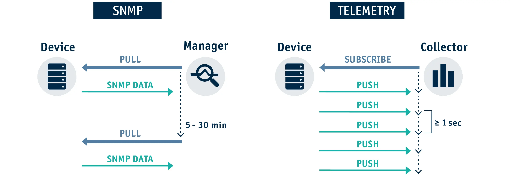

Las grietas del modelo SNMP tradicional
Durante más de treinta años, el Protocolo Simple de Administración de Red (SNMP) ha sido el pilar indiscutido para el monitoreo de infraestructura. Sin embargo, su arquitectura basada en polling (donde un servidor central pregunta periódicamente a cada dispositivo su estado) introduce una ineficiencia estructural insostenible para los volúmenes de tráfico actuales.
Cuando un sistema como Zabbix realiza consultas cada 5 minutos, la red se vuelve completamente ciega ante eventos críticos efímeros. Fenómenos como los microbursts (ráfagas de tráfico saturantes de milisegundos de duración) quedan completamente promediados en la gráfica, ocultando problemas severos de descartes de paquetes.
El costo computacional de procesar MIBs
Cada consulta SNMP requiere que el dispositivo de red recorra internamente su base de información de gestión (MIB), convierta esos datos lógicos a texto ASN.1 y los empaquete en UDP. Si incrementamos la frecuencia de polling a intervalos de pocos segundos para ganar resolución, la CPU del enrutador o switch se dispara drásticamente, comprometiendo el plano de forwarding de datos.

¿Qué es Streaming Telemetry?
La telemetría moderna cambia el paradigma por completo: en lugar de esperar a que le pregunten, el dispositivo de red es configurado para empujar (stream) de forma continua y automatizada sus métricas hacia un colector centralizado.
Este flujo de datos se realiza bajo demanda mediante conexiones persistentes, utilizando codificaciones ultraligeras y eficientes en rendimiento como Protocol Buffers (gRPC) o transporte crudo sobre UDP/TCP. Esto permite obtener métricas en tiempo real con granularidad de hasta milisegundos sin penalizar el rendimiento del hardware.
# Ejemplo conceptual de suscripción Dial-Out usando Python para escuchar datos gRPC
import grpc
from telemetry_pb2 import TelemetryStream
def listen_network_metrics():
channel = grpc.insecure_channel('0.0.0.0:50051')
stub = TelemetryStream.stub(channel)
for notification in stub.StreamMetrics(TelemetryRequest(sub_id="interfaces")):
print(f"Interface: {notification.path} | Speed: {notification.counters.bps_in}")
A través de este enfoque orientado a la automatización (NetDevOps), podemos desacoplar el procesamiento de la información, permitiendo que la analítica de red se gestione con las mismas herramientas del mundo de la ingeniería de software y contenedores.
- Modelo Push: Eliminación del overhead generado por las peticiones Request/Response constantes.
- Granularidad Extrema: Almacenamiento preciso apto para la detección temprana de anomalías lógicas.
- Estructura Consistente: Uso de modelos de datos estandarizados basados en YANG.
Diseñando el Pipeline de Datos ideal
Para persistir y consumir de manera ágil estos flujos de información, los esquemas relacionales convencionales quedan obsoletos frente a la velocidad de inserción requerida. La arquitectura recomendada en el ecosistema abierto se apoya en bases de datos orientadas a series temporales (TSDB) o de análisis columnar.
"Configurar colectores eficientes como Akvorado, combinados con ClickHouse, nos da la capacidad de consultar millones de flujos consolidados en milisegundos."
— Buenas prácticas en observabilidad de infraestructura
Conclusiones y próximos pasos
SNMP sigue siendo de utilidad para verificar estados binarios elementales (como si un equipo está encendido o apagado), pero ha perdido la batalla frente a las necesidades analíticas de las infraestructuras de misión crítica.
Si estás diseñando o administrando laboratorios en entornos simulados como GNS3 o redes de producción, dar el salto hacia arquitecturas basadas en streaming telemetry o análisis avanzados de flujos es el único camino viable para erradicar la opacidad en tus tableros de control. Comienza levantando una pila ligera de contenedores en una máquina Debian y migra tus métricas de interfaz hacia un modelo empujado por eventos. El cambio de visibilidad será inmediato.